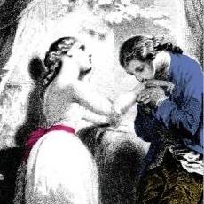
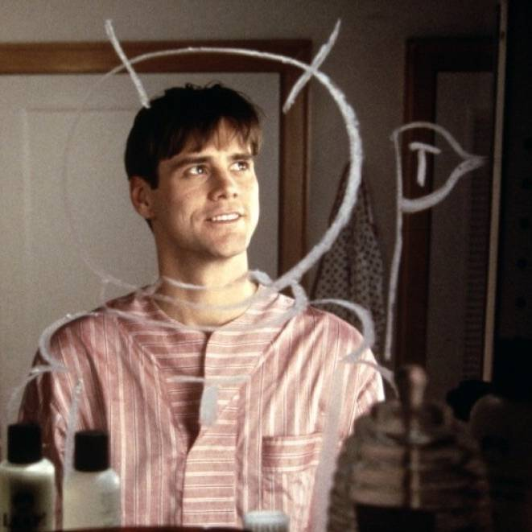
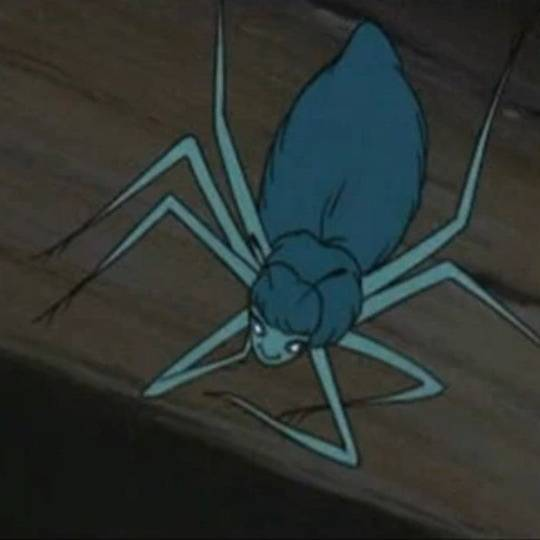
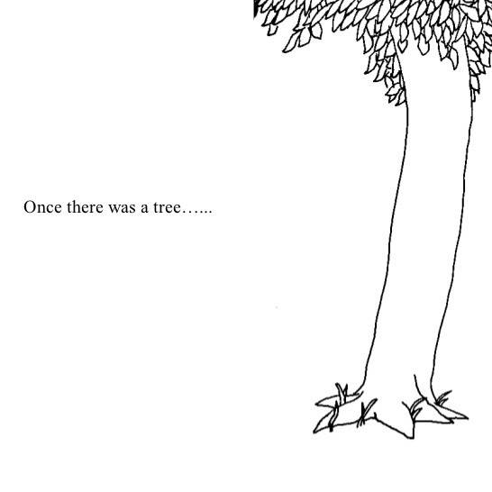
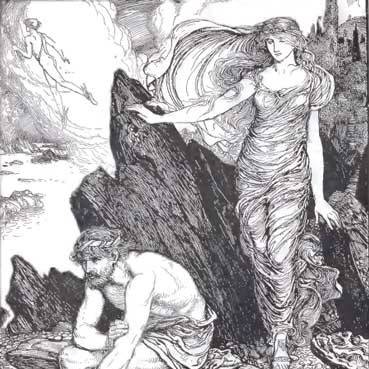

FICTIONAL ME: A LIST
Thanks for the rec! This was fun.
-

Werther / The Sorrows of Young Werther
Appreciate simplicity, don't need much, have a low tolerance for people who are in a bad mood, identify with this sentiment entirely: "the most restless wanderer longs in the end for his homeland again and finds in his cottage, in the arms of his wife, in the midst of his children, in the work of looking after them, the joy he had sought in vain in the wide world."
-
Valentine / Ender's Game
Too empathic for my own good, but stubbornly convinced that it's the right way to be.
-

Truman / The Truman Show
Kind of weird, a big chicken, but determined when I've made up my mind, I sometimes suspect everyone is in on it but me, spent a lot of my life unsuccessfully trying to just be happy doing what everyone else does.
-
Buffy Summers / Buffy the Vampire Slayer
Feel the weight of expectation keenly, sometimes feel like people expect too much from me, but get over it and on with it in the end.
-
Seymour / Ghost World
Would definitely get swallowed up in my obscure interests if I didn't have a family to ground me, sometimes have trouble connecting to people on a basic level, forgive people very easily.
-
Charlotte / Lost in Translation
Sometimes takes me a long time to understand what I'm feeling, sometimes become powerfully drawn to certain people, usually don't need a solution, just need a deep breath and to know someone cares.
-
Rocky Balboa / Rocky
I pretty much never give up, my wife is my constant motivation.
-

Charlotte / Charlotte's Web
Not sure my life has inherent meaning, painfully aware of the ugliness of my own life however small or essential it may be, sort of convinced that helping someone else selflessly will make a difference, use big words unnecessarily, kind of an annoying know-it-all.
-

The Tree / The Giving Tree
Believe deeply that giving and loving with all you have yields happiness.
-

Calypso / The Odyssey
Feel a little bit like I'll never truly understand anybody, feel apart from most people, yearn to be close to them for a time, yearn for solitude for a time, never quite satisfied with either.